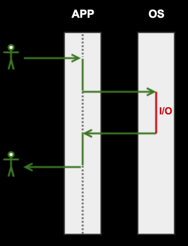

Node.js
Node.js
Программная платформаМодульная система
Работа с HTTP
Работа с файлами
Потоки
Ресурсы

CPU

Memory

Disk

Network
Сферические операции в вакууме
Вычисление числа Фибоначчи
– CPU bound операция
Подсчёт количества строк в файле
– I/O bound операция
Вычисление SHA-1 хеша файла в Git
– CPU bound операция
Операции в web-приложении
Чтение HTTP запроса | I/O |
Парсинг HTTP запроса | CPU |
Запрос в БД | I/O |
Запрос к API | I/O |
Генерация HTML | CPU |
Отправка HTML | I/O |
Thread
Одновременно выполняется только одна операция
Traditional I/O
Blocking I/O

Решение #1: Multithreading

Решение #1: Multithreading
✗ Поднятие потока не бесплатная операция
✗ Переключение между ними не бесплатное
✗ Есть лимиты на количество
✗ Каждый требует дополнительной памяти !
Non-blocking I/O
- Приложение запрашивает ресурс
с особым флагом O_NONBLOCK - Поток приложения не блокируется и продолжает работу
- Запросы складываются
в event demultiplexer - Как только ресурсы готов, event demultiplexer сообщает об этом
Blocking I/O
Решение #2: Non-blocking I/O

Паттерн Reactor

Apache vs Nginx
Apache использует multithreading. На каждый коннект к нему поднимается thread
Nginx использует паттерн Reactor
2009

Ryan Dahl
Event demultiplexer
epoll
kqueue
I/O Completion Port API

Операции в web-приложении
data = request('http://example.com/api');
db.insert(data);
Для каждого запроса ресурса необходимо указать handler
Паттерн Callback
request('https://...', function (err, data) {
db.insert(data, function (err, result) {
// Do something else
});
}
1. Callbacks come last
2. Error comes first
Паттерн Callback
JSON.parse(json);
function parseJSON(json, callback) {
try {
callback(null, JSON.parse(json));
} catch(err) {
callback(err);
}
};
parseJSON('{"foo": "bar"}', function(err, data) {
if (!err) console.log(data); //{ foo: 'bar' }
});
Javascript
✓ Анонимные функции и замыкания
✓ Готов к EventLoop (DOM events, timers)
✓ Большое коммьюнити !
Готовый набор модулей для работы с фаловой системой – fs, для запросов – http, логирования – console

Node.js
Getting started
apt-get install nodejs
brew install node
Скачать с nodejs.org
$ node
> 2 + 2
4
Посмотреть документацию
Node.js 4 LTS , Node.js 5Модули
- Фундаментальная структура кода в платформе Node.js
- Приложения состоят из модулей
- Реиспользуемые модули – пакеты
- В основе CommonJS
Философия Unix
Small is beautiful.
Make each program do one thing well.
Модули: Создание
// hyp.js
function square(n) {
return n * n;
}
function calculateHypo(a, b) {
return Math.sqrt(square(a) + square(b));
}
Модули: Экспорт
// hyp.js
function square(n) {
return n * n;
}
module.exports.calculate = function (a, b) {
return Math.sqrt(square(a) + square(b));
}
Модули: Импорт
// app.js
const hyp = require('./hyp.js')
hyp.calculate(3, 4); // 5
Модули: Экспорт через global
// hyp.js
function square(n) {
return n * n;
}
global.calculateHypo = function (a, b) {
return Math.sqrt(square(a) + square(b));
}
// app.js
require('./hyp.js')
calculateHypo(3, 4); // 5
Модули: Экспорт через global
github.com/shelljs// evil.js
require('shelljs/global');
rm('-rf', '/home/gogoleff/');
mkdir('-p', '/games');
Модули: Экспорт функции
// hyp.js
function square(n) {
return n * n;
}
module.exports = function calculateHypo(a, b) {
return Math.sqrt(square(a) + square(b));
}
// app.js
const calculateHypo = require('./hyp.js');
calculateHypo(3, 4); // 5
Модули: Экспорт *
module.exports = 42;
function User(name) {
this.name = name;
}
User.prototype.greet = function() {
console.log('Hello ' + this.name);
};
module.exports = User;
module.exports = new User();
module.exports vs exports
module.exports.calculateHypo = function (a, b) {}
exports.calculateHypo = function (a, b) {}
module.exports vs exports
exports = function calculateHypo(a, b) {}
// app.js
const calculateHypo = require('hyp.js');
calculateHypo(3, 4);
// calculateHypo is not a function
exports ⇢ module.exports
Модули: Импорт встроенных
const url = require('url');
url.parse('https://yandex.ru');
{
protocol: 'https:',
host: 'yandex.ru',
port: null,
path: '/'
}
Модули: Импорт сторонних
const lodash = require('lodash');
lodash.shuffle([1, 2, 3, 4]);
// [4, 1, 3, 2]
lodash.uniq([2, 1, 2]);
// [2, 1]
npm
Node Package Manager
Устанавливается вместе с Node.js
Умеет искать, устанавливать и удалять модули
Модули хранятся глобальном хранилище *
registry.npmjs.org/lodash* существуют приватные хранилища
npm init
Создаёт файл-манифест package.json описывающий модуль
Модуль + манифест = пакет
Файл содержит название и версию нашего модуля, его зависимости, ...
Demo
npm search
Ищет пакет в хранилище по имени
npm show
Выводит информацию о пакете по имени
Demo
npm install
Устанавливает пакет в качестве зависимости в директорию node_modules
Если у зависимости есть подзависимости – установятся в node_modules у зависимости
npm install --save
Зависимость зафиксируется в package.json
Demo
npm install mathjs@2.7.0
Устанавливает определённую версию пакета
npm install --save-dev mocha
Устанавливает пакет в качестве зависимости, которая не требуется для работы модуля. Например, для тестирования
Demo
docs.npmjs.com/files/package.jsonsemver
Semantic Versions
2.7.0
major – ломается обратная совместимость
minor – сохраняется обратная совместимость
patch – исправления ошибок
semver.orgМодули: Импорт
let counter = 1;
module.exports = function() {
return counter++;
}
const counter = require('./counter');
const anotherCounter = require('./counter');
console.log(counter()) // 1
console.log(counter()) // 2
console.log(anotherCounter()) // ?
Модули: Импорт
console.log(anotherCounter()) // 3
Модули импортируются один раз, и после первого require, экспорт кешируется
Результат хранится в свойстве require.cache
Demo
Модули: Поиск
Если есть встроенный модуль с таким именем, экспортируется он – require('url')
Если имя начинается с ./, / или . ./, экспортируется по указанному пути – require('./index.js')
В противном случае пакет ищется в node_modules начиная с текущей директории и поднимаясь вверх – require('mathjs')
Модули: Поиск
/home/gogoleff/hypotenuse/node_modules
/home/gogoleff/node_modules
/home/node_modules
Полный алгоритмNetwork
Поднять HTTP-сервер, который будет обслуживать запросы пользователей
Поднять HTTP-клиент, который сам будет ходить в другие сервисы
require('net');
Взаимодействие двух программ по TCP
Межпроцессорное взаимодействие через UNIX domain socket
require('http');
Взаимодействия по протоколу HTTP
require('http');
const http = require('http');
const server = new http.Server();
server.listen(8080);
server.on('request', function (req, res) {
res.end('Hello, User!');
});
req instanceof http.IncomingMessage
server.on('request', function (req, res) {
console.log(req.method); // GET
});
req.headers; // {'accept-encoding': 'gzip'}
req.url; // /favicon.ico
res instanceof new http.ServerResponse
server.on('request', function (req, res) {
console.log(res.statusCode); // 200
});
res.setHeader('content-type', 'text/html');
res.write('Hello!');
res.end();
Demo
require('http');
const http = require('http');
const req = http.request({
hostname: 'localhost',
port: 8080
});
req.end();
require('http');
req.on('response', function (response) {
let str = '';
response.on('data', function (chunk) {
str += chunk; // res.write
});
response.on('end', function () {
console.log(str);
});
});
Demo
require('url');
require('https');
require('querystring');
querystring.parse('foo=bar&arr=a&arr=b');
// { foo: 'bar', arr: ['a', 'b'] }
require('dns');
dns.lookup('nodejs.org', function (err, address) {
console.log(address); // 104.20.22.46
});
require('http');
req.on('response', function (response) {
let str = '';
response.on('data', function (chunk) {
str += chunk;
});
response.on('end', function () {
console.log(str);
});
});
require('events').EventEmitter;
var EventEmitter = require('events').EventEmitter;
var ee = new EventEmitter();
ee.on('log', console.log);
ee.emit('log', 'Hello!'); // Logged 'Hello!'
ee.emit('unknown event'); // Nothing
ee.emit('error'); // Uncaught, unspecified "error" event.
require('http');
req.on('response', function (response) {
let str = '';
response.on('data', function (chunk) {
str += chunk;
});
response.on('end', function () {
console.log(str);
});
});
require('request');
npm install request
const request = require('request');
request('https://registry.npmjs.org/',
function (err, res, body) {
if (!err && res.statusCode === 200) {
const registry = JSON.parse(body);
console.log(registry.doc_count);
// 271820
}
}
);
require('request');
Отправка файлов
HTTP-аутентификация
Проксирование
Files
require('fs');
const fs = require('fs');
fs.readFile(__filename, function (err, data) {
console.log(data);
});
__filename – имя текушего файла
Buffer 63 6f 6e 73 74 20 66 73 20 3d 20 72 65 ...
require('buffer');
Экспортирует класс для работы
с бинарными данными
Можно рассматривать как массив целых чисел, ограниченных диапазоном 0-255
Каждое число представляет байт
require('buffer');
const letterB = new Buffer([98]);
console.log(letterB.toString()); // b
console.log(letterB.toString('utf-8')); // b
require('buffer');
const msg = new Buffer([0x2f, 0x04, 0x3d, 0x04,
0x34, 0x04, 0x35, 0x04, 0x3a, 0x04, 0x41, 0x04]);
msg.toString();
// \u0004=\u00044\u00045\u0004:\u0004A\u0004
letterB.toString('ucs2');
// 'Яндекс'
require('fs');
fs.readFile(__filename, function (err, data) {
console.log(data.toString());
});
fs.readFile(__filename, 'utf-8', function (err, data) {
console.log(data);
});
const fs = require('fs');
fs.readFile(__filename, function (err, data) {
console.log(data.toString());
});
require('fs');
const data = fs.readFileSync(__filename, 'utf-8');
require('fs');
fs.appendFile();
fs.writeFile();
fs.unlink();
fs.mkdir();
fs.stat(__filename, function (stats) {
console.log(stat.isDirectory()); // false
});
require('fs');
fs.watch();
fs.watch(__filename, function (event, filename) {
console.log(event); // change or rename
});
fs.watch(__dirname, function (event, filename) {
console.log(event); // change or rename
});
Streams
Buffer Mode
fs.readFile(__filename, 'utf-8', function (err, data) {
console.log(data);
});
Данные предварительно сохраняются в Buffer
Только когда весь файл прочитан, данные передаются в обработчик
Stream Mode
Данные готовы для обработки, как только будет прочитан первый chunk
✓ Экономия ресурсов
✓ Экономия времени
Stream. Экономия ресурсов
//gzip.js
const fs = require('fs');
const zlib = require('zlib');
const filename = process.argv[2];
fs.readFile(filename, function(err, buffer) {
zlib.gzip(buffer, function(err, buffer) {
fs.writeFile(filename + '.gz', buffer, function(err) {
console.log('Success!');
});
});
});
$ node gzip bigfile.doc
0 1 2
Stream. Экономия ресурсов
Файл считывается в Buffer,
который хранится в памяти
Buffer в V8 не может быть больше 0x3FFFFFFF bytes ~ 1 Gb
File size is greater than possible Buffer: 0x3FFFFFFF bytes
Если приложение обрабатывает одновременно несколько пользователей?
Stream. Экономия ресурсов
fs
.createReadStream(filename)
.pipe(zlib.createGzip())
.pipe(fs.createWriteStream(filename + '.gz'))
.on('finish', function() {
console.log('Success!);
});
Stream. Виды
Readable для чтения
Writable для записи
Duplex для чтения и записи
Transform Duplex но с преобразованием/p>
Stream. Readable
fs.ReadStream
fs.createReadStream(filename);
http.IncomingMessage
require('http')
.request(options)
.on('response', function (res) {
res.on('data', function (chunk) {});
res.on('end', function () {});
});
Stream. Readable. Events
on('data') при получении чанка данных
on('end') при закрытии стрима
on('close') для записи
on('error') в случае ошибки !
Stream. Readable
process.stdin
.on('data', function(chunk) {
process.stdout.write('Hello, ' +
chunk.toString());
});
Stream. Writable
process.stdout
fs.WriteStream
fs.createWriteStream(filename);
http.ServerResponse
server.on('request', function (req, res) {
res.write('Hello, ');
res.write('World!');
res.end();
});
Stream. Writable. Методы
.write() отправляет порцию данных в поток
.end() завершает запись в поток
Stream. Writable. События
on('error') в случае ошибки передачи данных
Stream. Readble. .pipe()
$ cat index.js | grep "function" | wc -l
2
process.stdin
.on('data', function(chunk) {
process.stdout.write('Hello, ' +
chunk.toString());
});
process.stdin.pipe(process.stdout);
//gzip.js
const fs = require('fs');
const zlib = require('zlib');
const filename = process.argv[2];
fs.readFile(filename, function(err, buffer) {
zlib.gzip(buffer, function(err, buffer) {
fs.writeFile(filename + '.gz', buffer, function(err) {
console.log('Success!');
});
});
});
fs
.createReadStream(filename)
.pipe(zlib.createGzip()) // Duplex, Transform
.pipe(fs.createWriteStream(filename + '.gz'))
.on('finish', function() {
console.log('Success!);
});
Пример в 2-nodejs/examples
To be continued ...
Домашнее задание
github.com/urfu-2015/webdev-tasks-1Время на решение
7 дней